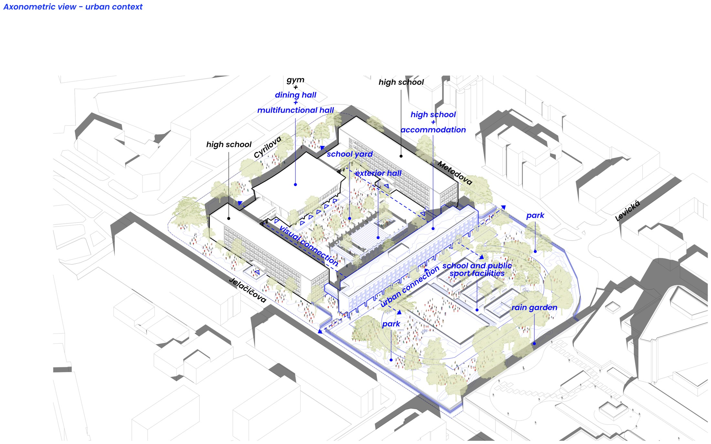
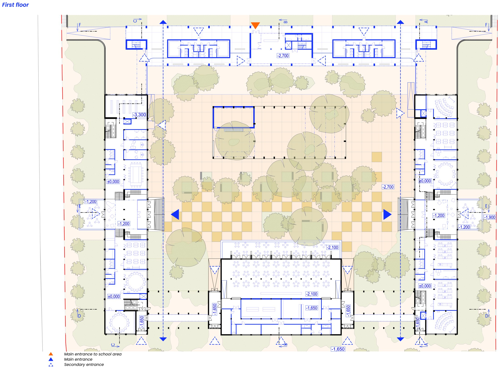
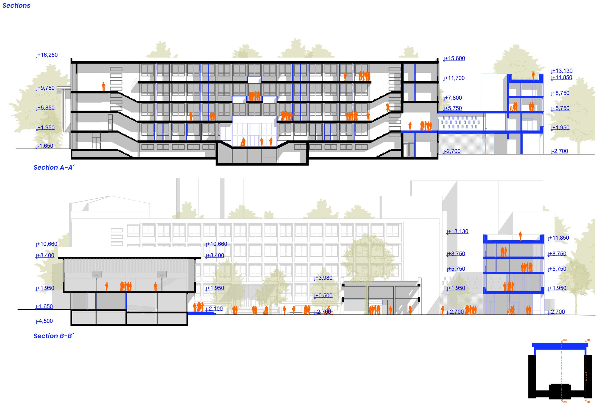
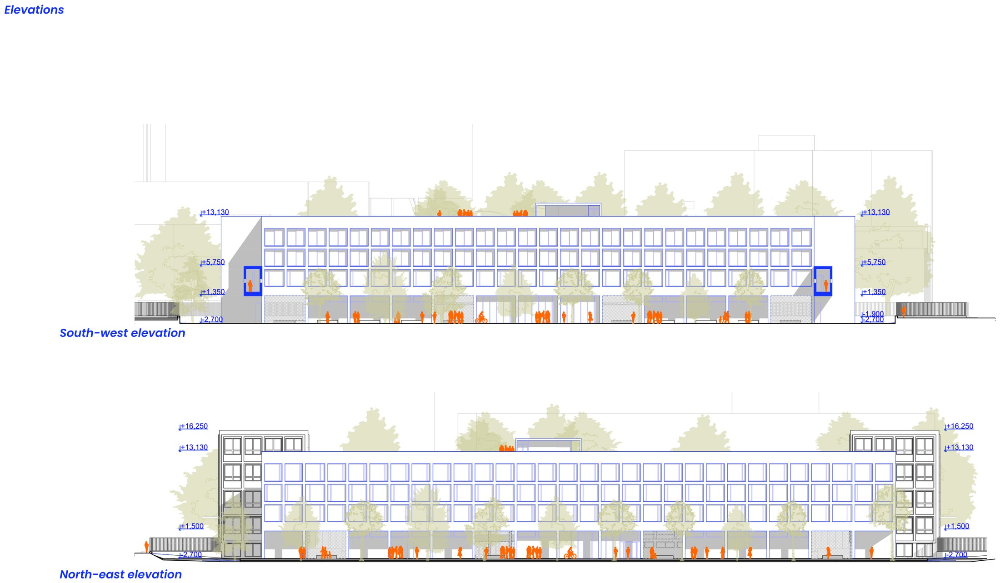
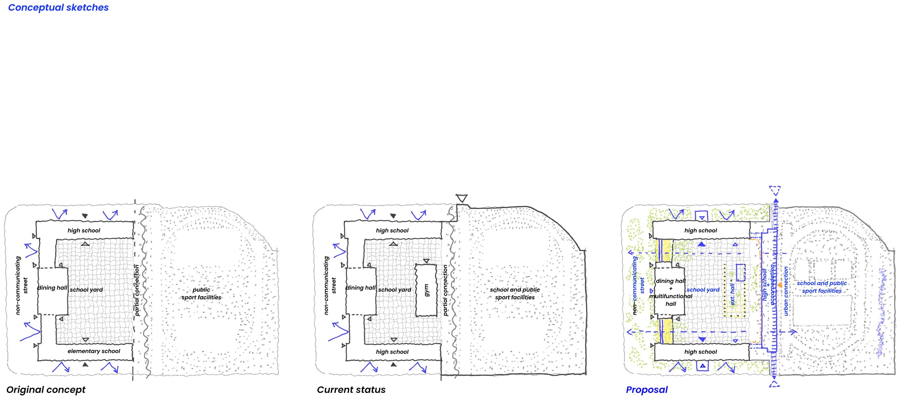

Gymnázium Metodova
Areálový komplex gymnázia z 60. rokov pri Trnavskom mýte. Cieľom návrhu je posunúť areál z úrovne bežnej bratislavskej školy na úroveň mestského kampusu 21. storočia a sprístupniť ho verejnosti — s dôrazom na celodenné fungovanie, debarierizáciu a lepšiu sociálnu interakciu medzi žiakmi a okolím.
Návrh vychádza z pôvodnej koncepcie architektov Krumlovej a Jendrejáka, ktorá prepájala okolité ulice cez školský areál. Súčasný stav túto logiku narúša — najmä prístavbou malej telocvične, ktorá zmenšuje školský dvor, aj obmedzenou prístupnosťou areálu. Nové krídlo preto spája jestvujúce objekty: obsahuje obslužné priestory športoviska, výučbové priestory na 2. nadzemnom podlaží a dve podlažia internátneho bývania.
Na prízemí pribúdajú terasy do ulíc aj do dvora a vzniká exteriérový stretávací priestor pre sezónne podujatia. Na poschodí sa staré prelína s novým cez veľkorysú presvetlenú chodbu zapojenú do vyučovacieho procesu skladacími priečkami; v strede každého podlažia je študentská agora. Internátne ubytovanie tvorí 19 dvojlôžkových izieb s kapacitou 76 žiakov, fasáda nového krídla pracuje s temperovanými priestormi, ktoré slúžia ako pridaný súkromný interiér v zime a exteriér v lete.





